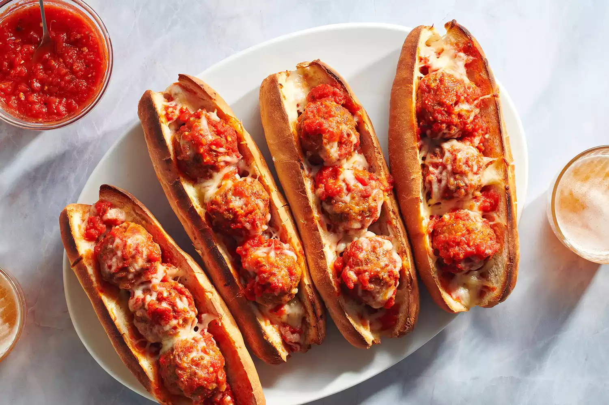

Meatball Subs

Description
This has been my go to meal the last couple of nights. It's easy and quick, and always tastes delicious. Great for parties, quick dinners, or Sunday football days. Nothing quite beats a meatball sub!
Ingredients
- 1 pound lean ground beef
- 1/2 pound mild or hot Italian sausage
- 2/3 cup plain breadcrumbs
- 1/2 cup grated Parmesan cheese
- 2 large eggs, lightly beaten
- 2 teaspoons minced garlic
- 1 teaspoon Italian seasoning
- 1 teaspoon fine salt
- 1/2 teaspoon freshly ground black pepper
- 2 cans of marinara sauce
- 6 hoagie buns
Steps
- Gather the ingredients
- Heat the oven to 350 F. In a bowl add the beef, breadcrums, cheese, eggs, garlic and seasoning to make the meatball mixture
- Form meatballs and bake in over until golden brown (30-35 mins)
- Smother meatballs in marinara sauce and smother with cheese on a bun
- Broil subs in the oven for 2-3 mins
- Enjoy!